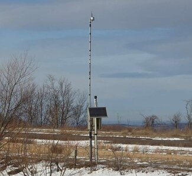

7 Springs
This node is down until further notice.

About this site
7 Springs is the primary hop WPA mesh has which makes the jump over Laurel Ridge into Somerset. It has proven to be in an excellent location with reach as far as 140km or more at times!
Located at a private airport near Seven Springs Mountain Resort, it's able to peek down into Somerset, cover some of the PA turnpike, and see most of WPAMesh's other routers westward. When western routers don't handle a packet, this node often does!
Coverage
[Theoretical RF estimate for 7 Springs]